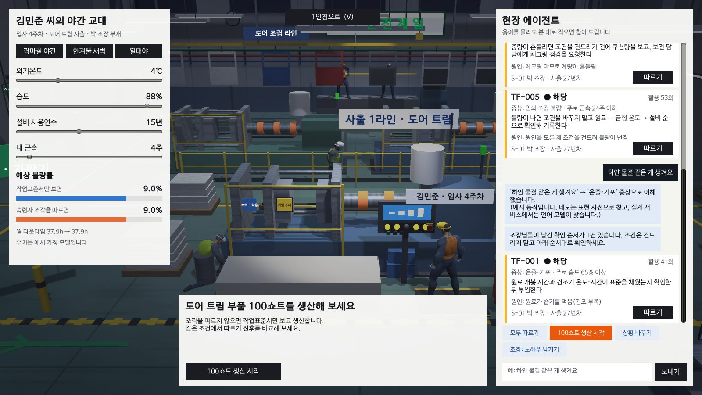

경력이 짧은 현장 근로자는 원인을 모른 채 조건을 건드립니다
표준서에는 조건값만 있어서, 불량이 나도 무엇부터 볼지 알 수 없습니다.
제조현장의 암묵지 기록·활용 플랫폼
불량이 나오기 시작한 야간 라인. 숙련자가 남긴 확인 순서가 현장 근로자 옆에 있습니다. 그 노하우가 쓰일 때마다, 남긴 사람에게 보상이 돌아갑니다.
조장이 남긴 확인 순서
주제
이 서비스는 제조현장의 암묵지 기록·활용 플랫폼입니다. 숙련자가 퇴직하면 작업표준서에 없는 요령(원료 습기 확인, 금형 온도 기다리기, 체크링 마모 점검)도 함께 사라집니다.
표준서에는 조건값만 있어서, 불량이 나도 무엇부터 볼지 알 수 없습니다.
웹 장부와 3D 공장에서 같은 조건의 불량률을 견줘 봅니다. 수치는 예시 가정 모델입니다.
김민준 씨의 하룻밤 입사 4주차 현장 근로자가 박 조장 없이 야간 교대로 도어 트림 100쇼트를 찍습니다. 하얀 물결 같은 불량이 생기는데 인수인계에는 특이사항이 없었습니다.
김민준 씨의 하룻밤
김민준 씨(24)는 울산의 자동차 부품 2차 협력사에서 도어 트림을 사출합니다. 27년차 박 조장은 주간 근무라 밤에는 없습니다. 이 서비스는 그날 밤을 이렇게 바꿉니다.
민준 씨는 이게 무슨 불량인지 이름도 모릅니다. 작업표준서에는 조건값만 적혀 있습니다.
새벽에 깨우기는 어렵고, 조건을 마음대로 바꿀 수도 없습니다. 그사이 불량은 계속 쌓입니다.
에이전트가 은줄로 알아듣고, 박 조장이 남긴 확인 순서를 보여 줍니다. 원료 개봉 시간 → 건조기 온도·시간 → 미달이면 투입 보류.
조건은 건드리지 않았습니다. 민준 씨가 "따랐어요"를 누르자 기록이 남습니다.
자기 요령이 밤사이 쓰인 것을 본 박 조장은, 다른 요령도 30초 말로 남깁니다. 은퇴한 뒤에도 이 기록은 남습니다.
시연
숙련자가 노하우를 남기고, 관리자가 승인하고, 현장 근로자가 쓰면 쓰인 만큼 원작성자의 기여가 쌓입니다. 아래로 내리면서 순서대로 보세요.
관리자, 숙련자, 현장 근로자가 한 포털에서 같은 원장을 씁니다. 역할에 따라 메뉴가 달라집니다.
증상, 확인 순서, 원인 순서로 판단을 남깁니다. 등록하면 검토 대기로 들어갑니다.
설정값 변경 표현과 비슷한 노하우를 자동으로 점검하고, 승인된 노하우만 게시합니다.
증상과 현장 조건으로 찾아, 확인 순서와 원인과 원작성자를 봅니다.
확인 순서대로 점검했다고 기록하면, 쓰인 만큼 원작성자의 기여 점수가 쌓입니다.
등록, 승인, 검색, 활용, 원장 반영까지 하나의 흐름으로 이어집니다.
현장 체험
민준 씨가 되어 현장 에이전트에게 본 대로 말하고, 박 조장의 노하우를 따라 100쇼트를 생산해 결과를 비교합니다. 3D에서 따른 기록은 업무 포털의 보상 원장에 그대로 반영됩니다.

설치 없이 PC 브라우저에서 열립니다. 처음 불러올 때 수십 초 걸립니다. 새 창에서 크게 열기 · 휴대폰용 훈련 · Windows용 프로그램
짧게 묻거나 30초 말을 받아, 증상 → 확인 순서 → 원인으로 정리합니다
용어를 몰라도 본 대로 적으면 조장이 남긴 확인 순서를 찾아 줍니다
기여 점수 = Σ 활용 횟수 × (불량 완화율 + 다운타임 완화율). 배분액 = 재원 × 점수 지분.
사회적 배경
문제
작업표준서에는 조건값만 있습니다. 무엇부터 확인하고 어떤 순서로 조치하는지는 숙련자의 머릿속에만 있습니다.
표준서에는 조건값만 있고, 확인 순서는 숙련자 머릿속에만 있습니다.
인수인계가 "특이사항 없음" 한 줄로 줄어듭니다.
소리, 냄새, 진동으로 알아채는 판단은 어디에도 기록되지 않습니다.
울산 제조업 근로자의 43%가 50대 이상입니다.
노하우를 내놓아도 숙련자에게 돌아오는 것이 없습니다.
서비스
30초 말하면 AI가 증상, 확인 순서, 원인, 조치로 정리하고, 숙련자가 확인해야 등록됩니다.
"하얀 물결 같은 게 생겨요"처럼 써도 해당 노하우를 찾아 줍니다.
교대 직전 30초 말로 남기면 다음 조가 설비별 카드로 확인합니다.
"소리가 둔해졌다" 같은 감각을 말과 10초 녹음으로 남깁니다.
조각을 따랐을 때와 아닐 때의 불량률과 다운타임을 비교합니다.
안내마다 원작성자를 표시하고, 활용될 때마다 보상 근거가 쌓입니다.
"제안" 표시는 아직 아래 체험에 들어 있지 않은 기능입니다. 언어 모델은 숙련자가 말한 것만 정리하고, 판정과 계산은 규칙이 맡습니다.
보상
아래는 기본안입니다. 비율과 기간은 현장 인터뷰로 검증해 고칠 값입니다.
| 항목 | 기본안 |
|---|---|
| 활용 1회 기준 | 안내된 조각을 작업자가 "따랐어요"로 확인한 건 |
| 부풀리기 방지 | 같은 작업자·같은 조각은 하루 1회만 집계하고, 본인 조각을 본인이 쓴 것은 제외 |
| 권리 | 회사는 사용할 권리, 숙련자는 보상받을 권리 |
| 재원 | 줄어든 불량 비용의 일정 비율(예: 10%)을 매달 적립해 활용 지분대로 배분 |
| 퇴직 후 | 퇴직 후에도 일정 기간(예: 3년) 지급 |
| 돈 이외 | 조각마다 작성자 표시, 인사 평가와 정년 후 재고용 판단에 반영 |
기대효과
숫자로 남지 않던 판단까지 기업의 자산으로 남기는 방식입니다. 아래는 기대하는 효과이며, 현장 검증으로 확인할 값입니다.
| 대상 | 기대효과 |
|---|---|
| 현장 근로자 | 야간·주말에도 1차 대응 가능, 용어를 몰라도 검색, 대응 시간 단축 |
| 교대조 | 앞 조가 느낀 이상 징후를 이어받아 같은 문제를 반복하지 않음 |
| 숙련자 | 야간 호출 감소, 노하우 활용만큼 보상, 퇴직 후에도 기여 인정 |
| 협력사 | 불량과 라인 정지 시간 감소, 노하우의 자산화, 교육 기간 단축 |
| 데이터 자산 | 소리·냄새 같은 감각 판단이 결과와 함께 쌓여 향후 이상 감지 모델의 학습 데이터가 됨 |
| 지역·산업 | 가장 빠르게 늙는 울산 제조 현장의 숙련 기술 보존, 영세 협력사의 저비용 AI 도입 사례 |
차별점
사람을 연결하는 것이 아니라 지식을 남깁니다.
숙련자가 은퇴해도 노하우는 현장에 남고, 쓰일 때마다 보상이 돌아갑니다.